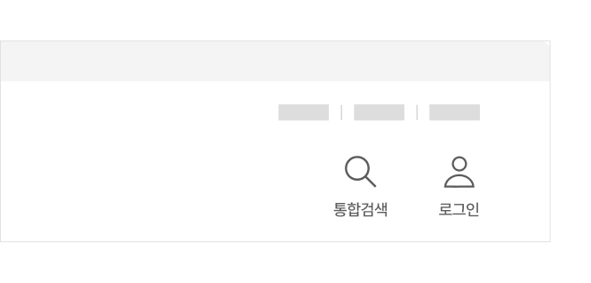

@@include("../inc/guide-lnb.html")
@@include("../inc/page-breadcrumb.html")
@@include("../inc/page-title.html", { "desc" : "" })
@@include("../inc/page-quick-nav.html")

구조
- 1.아이콘로그인에 사용되는 링크 요소임을 보다 직관적으로 인지할 수 있도록 제공되는 아이콘
- 2.레이블아이콘에 대한 텍스트 레이블
사용성 가이드라인
필수로그인 링크는 모든 화면에서 일관된 위치에 주목도 있게 배치한다.
로그인으로 이동할 수 있는 링크가 메인 화면 또는 일부 화면에만 제공될 경우, 로그인이 필요한 사용자는 특정 화면으로 이동하는 경우에만 기능을 이용할 수 있어 이용에 어려움을 겪게 된다. 주요 정보 및 서비스를 확인하는 데 로그인이 필요한 경우, 서비스 첫 화면에 로그인을 유도하는 문구와 링크를 강조하여 표시함으로써 로그인을 유도할 수 있다.
권장헤더에서 제공되는 로그인 링크는 사용자 아이콘과 레이블로 구성한다.
아이콘만 단독으로 사용되는 경우 사용자에 따라 링크의 목적을 빠르게 이해하기 어려울 수 있으므로 텍스트 레이블을 함께 제공하는 것이 좋다.
모범 사례

피해야 할 사례
필수로그인 링크는 항상 ‘로그인’ 화면으로 연결되어야 한다.
로그인 링크의 목적지는 로그인 프로세스를 시작하는 화면 또는 로그인할 수 있는 다양한 계정이 있는 계정 선택 화면으로 설정해야 한다.
플랫폼에 대한 고려 사항
화면 너비가 충분하지 않은 경우에도 로그인 링크를 직관적으로 인지할 수 있는 형태로 표현한다.
작은 화면 너비에서도 가능한 한 로그인 링크를 숨기지 않고 헤더나 탭바 영역에 로그인/마이페이지 링크를 상시 배치한다. 만약 서비스 이용에 로그인이 중요하지 않다면 메뉴 레이어에서만 로그인 링크를 제공할 수 있다.
예시
| 1Depth | 2Depth | File Link |
|---|---|---|
| 레이아웃 | 유형1 | html 화면 확인하기 |
| 유형2 | html 화면 확인하기 |
접근성 가이드라인
로그인 링크는 스크린 리더에서 링크로 인지될 수 있도록 한다.
로그인 링크를 버튼 요소로 마크업하게 되면 로그인 화면으로 이동하는 동작이 발생함을 예측할 수 없다.
- WCAG 2.1 Name, Role, Value (A)
@@include("../inc/page-related-items.html",{
"component": [
{
"title": "헤더",
"url": "./../component/component_02_03.html"
},
],
})
@@include("../inc/page-faq.html")
@@include("../inc/page-info-update-log.html")
@@include("../inc/page-banner.html")